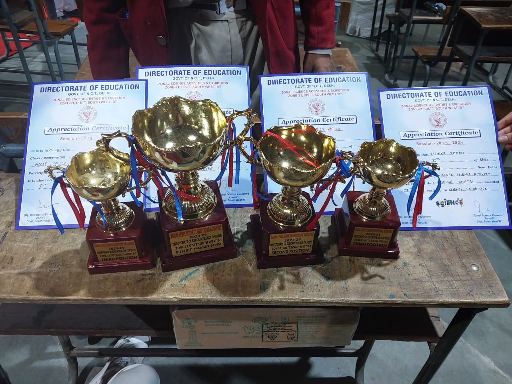
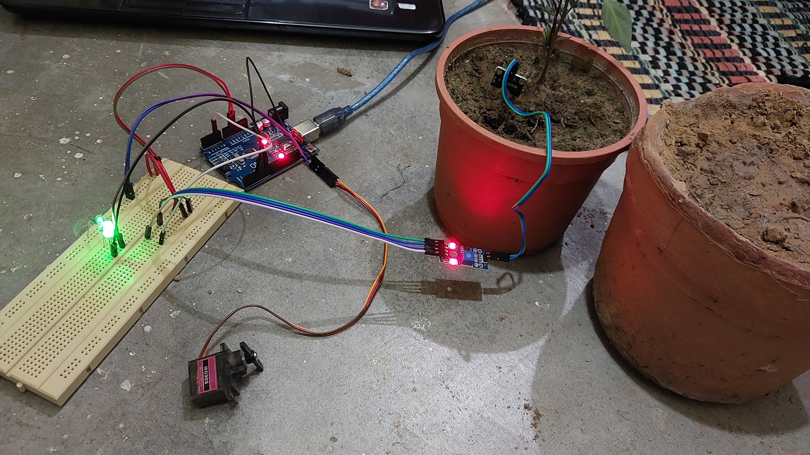
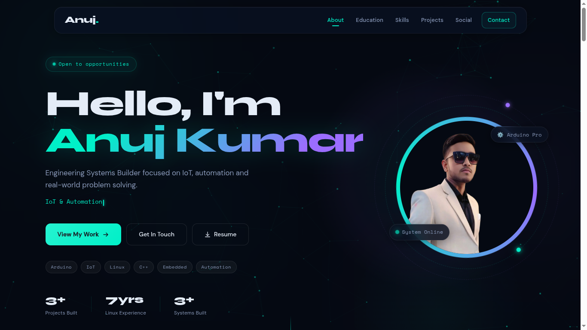
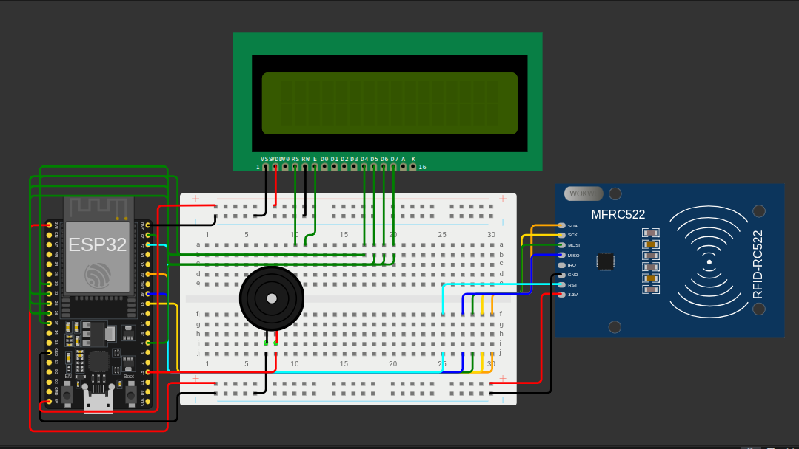

Engineering Systems Builder focused on IoT, automation and real-world problem solving.
I'm Anuj Kumar, a B.Tech Automation & Robotics student focused on building practical systems that connect hardware, software, and automation to solve real-world problems.
I learn best by building, experimenting, and solving rather than simply studying concepts. My work spans embedded systems, IoT, Arduino, ESP32, sensors, RFID, circuit design, Linux, and web technologies, with a focus on turning individual components into working systems.
One of my early hands-on experiences came from rebuilding and optimizing a complex Arduino-based system under a strict deadline. The project was recognized at a zonal science exhibition, teaching me valuable lessons in troubleshooting, system integration, teamwork, and working effectively under real constraints.
I later developed EcoPal, a sensor-driven smart plant automation system as part of my school's Entrepreneurship Mindset Curriculum (EMC). The project was selected at the zonal level and progressed toward the district level. However, as I completed Class 12 and moved beyond school, I was no longer able to continue taking the project forward as a school-level student project.
Today, I'm continuing that same approach through projects such as TrackIn, an RFID-based system designed to automate library entry, exit, and digital record management. I enjoy working on problems where technology can replace repetitive manual processes with simpler, more reliable, and scalable solutions.
Currently, I'm focused on developing stronger foundations in automation, embedded systems, programming, and system design, while also exploring how engineering can be combined with practical and business-oriented thinking.
I want to grow into an engineer who doesn't just understand how technology works, but can think, build, adapt, and execute—turning ideas into systems that are useful beyond the classroom.




Have a project in mind or just want to connect? Drop me a message!
Social Media